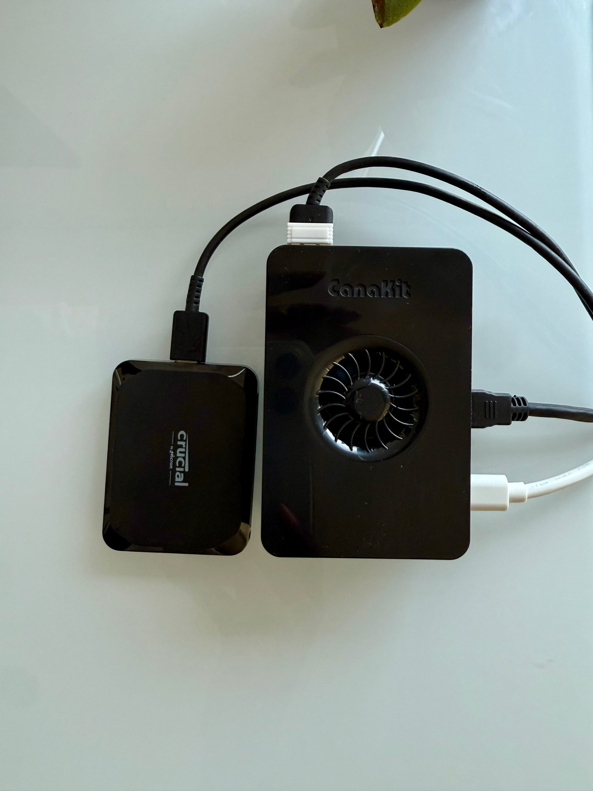
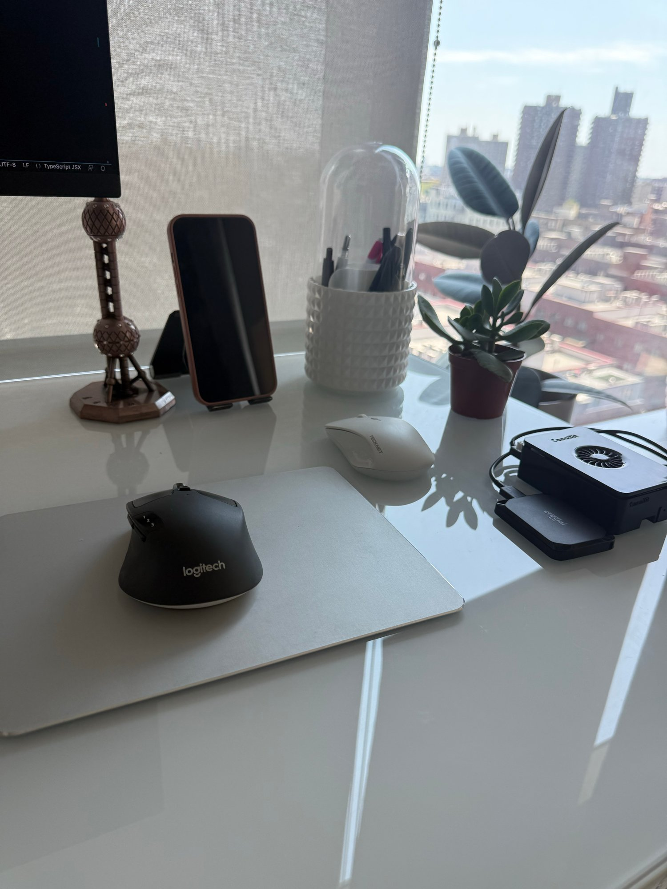

Building an On-Prem Homelab with a Raspberry Pi 5
Over the last few months, I’ve been building several infrastructure-heavy side projects that require long-running background services. During that process, I found that workloads such as Kafka consumers, blockchain nodes, databases, vector databases, and other always-on services can become surprisingly expensive to run in the cloud. While cloud platforms provide incredible flexibility, paying for compute that runs 24/7 quickly adds up for proof-of-concepts and R&D projects.
At one point, my AWS bill had grown to roughly $500 per month between compute and storage. Before purchasing hardware, I evaluated several alternatives, including decentralized cloud providers such as Akash, which offered compute costs approximately 30% lower than AWS. While those savings were meaningful, I realized my workloads were relatively small and consistently underutilized the cloud resources I was paying for.
Given my current demand, a small bare-metal server made far more economic sense.
The Raspberry Pi 5 turned out to be an excellent fit. With an upfront investment of approximately $700 — $399.99 for the CanaKit Raspberry Pi 5 16GB Starter Kit PRO (which includes the Pi 5, power supply, active cooling case, and microSD card) and $299.99 for the 2 TB Crucial X9 external SSD — it provided enough CPU, memory, and storage to support my long-running services while dramatically reducing my recurring infrastructure costs.
It’s worth noting that the Raspberry Pi Foundation does not publish an official Mean Time To Failure (MTTF) for the Raspberry Pi 5. In practice, however, Raspberry Pis are commonly deployed as always-on systems in home labs, educational environments, and industrial applications. Reliability depends less on the board itself and more on using a quality power supply, adequate cooling, and durable storage.
In the remainder of this post, I’ll walk through the hardware I selected, how I separated compute from persistent storage, my networking configuration, how I distributed workloads across multiple Raspberry Pis, and the lessons I learned migrating portions of my development environment off the cloud.

Hardware Overview
I already owned a Raspberry Pi 4 that had been sitting untouched in my closet for several years. While it was still perfectly functional, my latest experiments required more CPU, additional memory, and faster I/O than the Pi 4 could comfortably provide.
That led me to purchase the Raspberry Pi 5 and Crucial X9 SSD mentioned above, which was suitable for my use case.
The Raspberry Pi 5 offers a substantial performance improvement over previous generations while maintaining a small footprint, low power consumption, and a price point that makes it attractive for personal infrastructure projects. For my current workloads, it provides more than enough compute capacity while costing only a fraction of what I was spending on cloud infrastructure each month.
Assembly was straightforward and took less than 30 minutes. I used the following video as a guide during the build.

Compute & Storage
One of the first architectural decisions I made was separating compute from persistent storage. Everything runs locally on the Pi, migrated off of AWS onto the homelab.
The Raspberry Pi 5 serves as the compute node, running Docker and all of my backend containerized services. Persistent application data, however, lives on a 2 TB Crucial X9 external SSD connected over USB 3.2.
This architecture provides several advantages:
- Faster storage performance than relying solely on the microSD card.
- Greater durability for write-heavy workloads such as PostgreSQL, Kafka, and blockchain nodes.
- Easier backups and migration of persistent data.
- Stateless application containers that can be recreated without losing data.
Rather than storing application data inside Docker containers, I mount directories from the external SSD into each container using bind mounts. The containers themselves remain ephemeral, while all persistent state is stored directly on the SSD.
Setting this up required creating the host directories on the SSD manually, updating their permissions so each container could actually write to them, and then wiring those paths into the compose file as bind mounts.
Using my Postgres and Redis instances as an example, the mounted volumes look like this:
services:
postgres:
image: postgres:17
ports:
- "5432:5432"
volumes:
- ${POSTGRES_VOLUME_PATH:-./data/postgres}:/var/lib/postgresql/data
redis:
image: redis:7
restart: always
command: ["redis-server", "--appendonly", "yes"]
ports:
- "6379:6379"
volumes:
- ${REDIS_VOLUME_PATH:-./data/redis}:/dataWhenever PostgreSQL inserts a row, updates an index, or flushes Write-Ahead Log (WAL) records, those files are written directly to the mounted data directory on the external SSD. The database’s heap files, indexes, WAL, catalogs, and other internal storage structures all reside on the SSD rather than inside the container.
The same architecture applies to the rest of my stateful services. Kafka stores its log segments on the SSD, blockchain nodes persist their chain data there, Redis stores its persistence files, and Qdrant, my vector database, stores embeddings used for semantic search and Retrieval-Augmented Generation (RAG). By persisting these workloads to the SSD, data survives container restarts while benefiting from fast random reads and writes.
Today, the SSD stores:
- PostgreSQL data
- Kafka log segments
- Blockchain node state
- Redis persistence
- Qdrant vector embeddings
- Application logs
- Backups
Meanwhile, the Raspberry Pi’s microSD card is used primarily to boot the operating system. By moving nearly all write-heavy workloads to the external SSD, I reduce wear on the SD card while taking advantage of the SSD’s significantly better performance and endurance.
Although this homelab is much smaller than a cloud deployment, the underlying architecture follows the same principle used in production systems: compute is responsible for executing workloads, while persistent storage is managed independently.
This separation of concerns has made it significantly easier to experiment with distributed systems and AI infrastructure while keeping my recurring infrastructure costs close to zero.
While the Crucial X9 is capable of sequential transfer speeds of up to 1,050 MB/s read and 1,000 MB/s write, real-world throughput depends on the workload. For my use cases — including PostgreSQL, Kafka, Redis, Qdrant, blockchain nodes, and long-running background workers — the SSD provides more than enough bandwidth.
Compared to my previous AWS bill of approximately $500 per month, the hardware paid for itself in about a month and a half while giving me complete control over my development environment. This comparison excludes the cost of my Internet connection, which I would pay for regardless.
Networking
One of the most important design decisions for my homelab was determining how to securely expose applications running inside my apartment to the public Internet given I don’t have the same guardrails as prominent cloud providers. Security is one of the biggest tradeoffs.
Since the Raspberry Pi shares a residential network with my personal devices, including laptops, phones, and other home electronics, I wanted to be especially cautious about introducing unnecessary security risks. While configuring simple port forwarding on my router would have made the application publicly accessible, it would also increase the attack surface of my home network.
My environment also includes workloads that require external network connectivity. For example, I run a blockchain node that participates in a peer-to-peer network, and several backend services make outbound API calls to hosted large language model (LLM) providers. These requirements meant I needed a networking design that supported both inbound application traffic and secure outbound communication without unnecessarily exposing internal services.
Rather than exposing the Raspberry Pi directly to the Internet, I chose to use Cloudflare Tunnel. The tunnel establishes an outbound encrypted connection from my homelab to Cloudflare’s edge network, allowing incoming HTTPS traffic to reach my application without opening inbound ports on my home router.
cloudflared:
image: cloudflare/cloudflared:latest
restart: unless-stopped
depends_on:
- api
command: tunnel --no-autoupdate --url http://api:8000Internally, application containers communicate over an isolated Docker network. Services such as PostgreSQL, Redis, Kafka, and Qdrant remain private and are not directly accessible from the Internet. Only services that explicitly require external connectivity—such as the blockchain node for peer-to-peer communication or backend services making outbound requests to LLM APIs—are granted the network access they need, while everything else stays isolated.
As the homelab evolved, I began distributing workloads across multiple Raspberry Pis. Rather than exposing each device publicly, they communicate over my private LAN using only the necessary application ports. This separation allows compute-intensive workloads, databases, and supporting infrastructure to run on different devices while maintaining a relatively simple and secure network architecture.
Distributed Architecture (Pi 4 & Pi 5)
Although the Raspberry Pi 5 was more than capable of handling my current R&D workloads, I already owned a Raspberry Pi 4 that had been sitting unused. Rather than letting it collect dust, I decided to experiment with distributing services across multiple nodes.
None of my projects required the additional compute capacity. Instead, the goal was to evaluate how lightweight services could be separated across machines while keeping stateful infrastructure centralized. There are many different ways to distribute applications across multiple nodes—this was simply the approach that made the most sense for my setup.
The Raspberry Pi 5 remained the primary node, hosting PostgreSQL, Kafka, Redis, Qdrant, and the blockchain node. The 2 TB external SSD also remained attached to the Pi 5, allowing all persistent data—including database files, Kafka log segments, blockchain state, vector embeddings, and application data—to reside on a single storage device.
The Raspberry Pi 4 was used to host lighter-weight stateless services, such as FastAPI applications and background workers. Since these services don’t maintain persistent state, they can be moved between nodes with minimal operational overhead.
The two Raspberry Pis communicate exclusively over my private local area network using only the application ports required for inter-service communication. Databases and other internal services remain inaccessible from the public Internet, while application traffic is routed through Cloudflare Tunnel.
Conclusion
What started as a simple experiment ultimately had lasting benefits beyond what I originally expected.
My initial goal was to reduce cloud costs while continuing to build infrastructure-heavy side projects. Over time, the homelab evolved into a flexible development environment capable of running databases, messaging systems, blockchain nodes, AI infrastructure, and web services on inexpensive hardware.